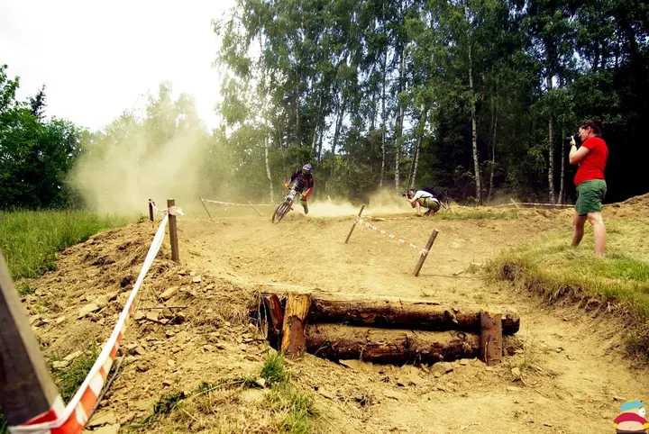
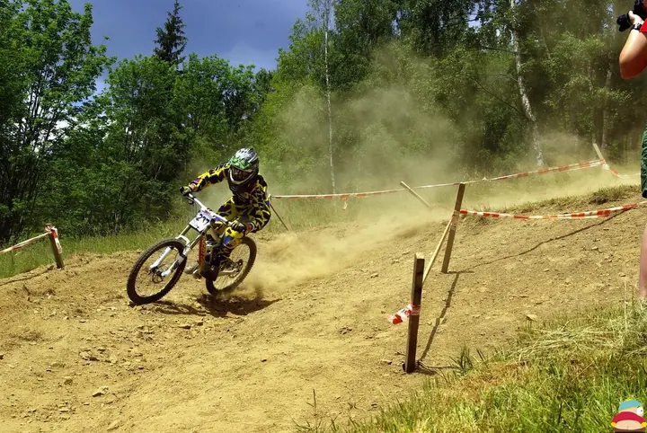
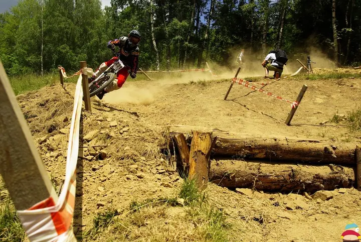

01 / 02
Sportovní akce a závody
Fotím sport přímo na trati, třeba závody horských kol, skoky a průjezdy zatáček. Z každé akce vzniká album, kde si jezdci i pořadatelé najdou své fotky.
Zeptat se na termín→



Sport v plné rychlosti
Zeptat se na termín →(01) Ahoj
Jmenuji se Ondřej Halama a fotím sport, hlavně tam, kde se skáče a práší z trati. Za ta léta jsem na Rajčeti nasbíral přes šest tisíc fotek ze závodů a akcí.
(02) Co fotím
01 / 02
Fotím sport přímo na trati, třeba závody horských kol, skoky a průjezdy zatáček. Z každé akce vzniká album, kde si jezdci i pořadatelé najdou své fotky.
Zeptat se na termín→02 / 02
Všechny fotky z mých alb jsou chráněné autorským zákonem. Pokud chcete některou z nich použít, napište mi a domluvíme se.
Zeptat se na termín→(03) Portfolio
Kliknutím fotku zvětšíte · fotografie jsou ilustrační
(04) Postup
Od první zprávy po hotovou galerii.
Krok 1 z 4
Pošlete e-mail nebo zprávu přes Facebook, o jakou akci jde, kdy a kde se koná.
Krok 2 z 4
Na místě hledám místa, kde je nejvíc akce: skoky, rampy a zatáčky.
Krok 3 z 4
Po akci projdu fotky, vyberu ty povedené a upravím je.
Krok 4 z 4
Fotky zveřejním v albu na Rajčeti, kde si je můžete prohlédnout a najít v nich sebe.

Prach, rychlost a jezdec ve vzduchu
(05) Za objektivem
Nejvíc mě baví fotit sport tam, kde se něco děje. Stoupnu si k trati, k rampě nebo do zatáčky a čekám na chvíli, kdy je jezdec ve vzduchu nebo za ním zvedá prach.
Fotky z akcí dávám do alb na Rajčeti, kde si je jezdci, jejich blízcí i pořadatelé můžou v klidu projít. Na tomto profilu už nová alba nepřibývají, pokračování najdete na cartman.rajce.idnes.cz.
Všechny fotky jsou chráněné autorským zákonem. Pokud chcete některou použít, ať už pro sebe, pro tým nebo pro akci, napište mi e-mail a domluvíme se.
Ondřej
Ondřej Halama · Sportovní fotograf
Fotky jsou chráněné autorským zákonem a bez souhlasu je používat nelze. Stačí mi napsat e-mail, o kterou fotku jde a k čemu ji chcete použít, a domluvíme se.
Na tomto profilu už nová alba nepřidávám. Pokračování najdete na cartman.rajce.idnes.cz.
Zaměřuji se na sport. Napište mi, o jakou akci jde, a řeknu vám, jestli to zvládnu.
Nejrychleji e-mailem na ondrejhalama@email.cz, případně přes Facebook.
(07) Kontakt
Napište pár vět o tom, co si představujete, a termín, který se vám hodí.
ondrejhalama@email.cz